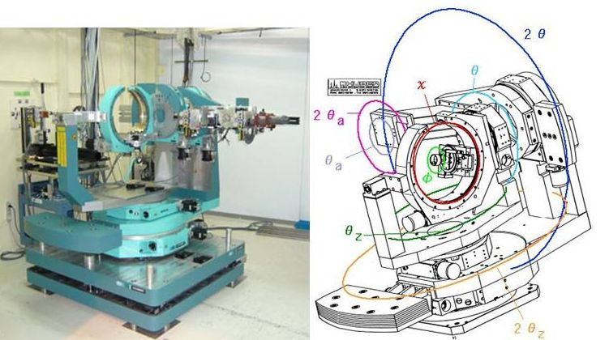

 |
産業利用ビームラインBL19B2,BL46XUに設置されている多軸回折計は、基本的には試料方位制御軸であるχクレードルのχ軸,
φ軸および、回折面走査軸θ,回折X線走査軸 2θの主要4軸を持つ4軸回折計の校正を持つ。
このうち、回折面走査軸と回折X線走査軸については走査面を垂直面および水平面にもつ2組の軸（2θ, θ、2θz, θz）をもち、
さらにアナライザー結晶用の2軸ゴニオ（ωa, 2θa)を検出器アームに装備する計8軸構成である。
χクレードルについてはC型のものを採用しており、測定時の死角を排除して-20°から160°の広い散乱角の範囲を確保することができる。
これにより、試料に対するX線の入射角や回折X線の検出角度の制御の自由度が必要となる、
薄膜X線回折実験や残留歪解析実験において使いやすい装置構成となっている。
サンプルステージには自動XYZステージまたは自動スイベルステージを装備することにより、
精度のよい試料位置調整を行うことができるだけでなく、X線 照射位置のマッピング測定が可能である。
検出器はNaIシンチレーションカウンターを標準として装備しているが、
そのほかにも2次元ピクセル検出器（PILATUS）やイメージングプレート（IP）なども使用可能である。
光学系には、入射側に1つ、受光側（検出器アーム上）に2つの自動4象限スリットを装備することで、
遠隔操作による入射ビームサイズ及び受光側のコリメーションの調整を可能としている。
さらに受光側にソーラースリット、アナライザー結晶を装着可能で、多様な実験に適した光学系選択の自由度が確保されている。